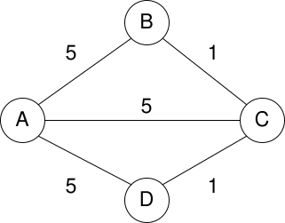
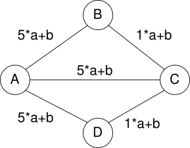

Part 7: Review Session & QCM#
Recommended plan for the review session:
First 20 minutes: Read and answer the multiple-choice questions (MCQs) individually.
Next 20 minutes: Collective review and discussion of the MCQs. Compare answers within your group and make sure everyone understands the justification for each statement.
Remaining 1h20: Solve the two INGInious programming tasks at the bottom of the page.
Repeated Huffman Compression — Jan 2020#
Given a text containing only the character a repeated one million times (\(10^6\)) and encoded in extended ASCII (one byte per character).
Suppose this text is compressed by applying the Huffman compression algorithm twice in succession:
input --compress--> output1 --compress--> output2
\-----------> tree1 \-----------> tree2
The serialized trees (tree1 / tree2) are not counted in the output sizes (output1 / output2).
Note: For a single-character alphabet (or when a is encoded using 1 bit per occurrence), each character of output1 is grouped into 8-bit bytes before the second compression pass.
Check all correct statements. \(\text{size}(x)\) denotes the length in bits of x (for example, \(\text{size}(\text{input}) = 8 \cdot 10^6\)):
\(\Large{\frac{\text{size}(\text{output1})}{\text{size}(\text{input})} \simeq \frac{1}{8}}\)
\(\Large{\frac{\text{size}(\text{output1})}{\text{size}(\text{input})} \simeq \frac{1}{2}}\)
\(\Large{\frac{\text{size}(\text{output2})}{\text{size}(\text{input})} \simeq \frac{1}{64}}\)
\(\Large{\frac{\text{size}(\text{output2})}{\text{size}(\text{input})} \simeq \frac{1}{16}}\)
\(\Large{\frac{\text{size}(\text{output2})}{\text{size}(\text{input})} \simeq \frac{1}{8}}\)
Huffman Trie Deserialization Complexity — Jan 2020#
The header of a file compressed with Huffman coding contains a serialized version of the coding trie obtained via a preorder traversal.
Given that the trie contains \(n\) nodes in total, what is the tightest time complexity of reconstructing the linked trie from the bit stream using readTrie()?
private static Node readTrie() {
boolean isLeaf = BinaryStdIn.readBoolean();
if (isLeaf) {
// constructor is (letter, leftNode, rightNode)
return new Node(BinaryStdIn.readChar(), null, null);
}
else {
return new Node('\0', readTrie(), readTrie());
}
}
\(\mathcal{O}(n)\)
\(\mathcal{O}(n \log n)\)
\(\mathcal{O}(\log n)\)
\(\mathcal{O}(n^2)\)
None of the above (\(\mathcal{O}(f(n))\) where \(f(n)\) grows faster than \(n^2\))
Huffman Trie Construction Complexity — Jan 2020#
Given a frequency table with \(n\) non-zero entries (\(R = n\)), what is the tightest time complexity of building the Huffman trie from the frequency array using buildTrie?
// build the Huffman trie given frequencies
private static Node buildTrie(int[] freq) {
// initialize priority queue with singleton trees
MinPQ<Node> pq = new MinPQ<Node>();
for (char c = 0; c < R; c++)
if (freq[c] > 0)
pq.insert(new Node(c, freq[c], null, null));
// merge two smallest trees
while (pq.size() > 1) {
Node left = pq.delMin();
Node right = pq.delMin();
Node parent = new Node('\0', left.freq + right.freq, left, right);
pq.insert(parent);
}
return pq.delMin();
}
\(\mathcal{O}(\log n)\)
\(\mathcal{O}(n)\)
\(\mathcal{O}(n \log n)\)
\(\mathcal{O}(n^2)\)
None of the above (\(\mathcal{O}(f(n))\) where \(f(n)\) grows faster than \(n^2\))
True/False: Shortest Paths and MSTs — Jan 2020#
Answer True or False. Every word matters!
Grading rule: \(20 \cdot \max(0, 2(\frac{x}{n} - 0.5))\) where \(x\) is the number of correctly answered statements out of \(n\) (random guessing yields 0 on average).
Example Graph:


Linear Transformation: By a “linear transformation” with coefficients \(a > 0\) and \(b \ge 0\), we mean replacing the weight \(w\) of every edge in the graph by \(a \cdot w + b\):


Dijkstra’s algorithm finds the shortest path in any graph, including graphs with negative edge weights, as long as there are no negative-weight cycles.
Assuming a connected starting graph, an invariant of Prim’s algorithm during its execution is that the selected edges always form a single connected tree.
During its execution on a connected graph with positive edge weights, Dijkstra’s algorithm builds a spanning tree of the graph (the shortest-path tree) where every path from the source root to any vertex is a shortest path in the graph.
The spanning tree generated by Dijkstra’s algorithm on a connected positively-weighted graph is always a Minimum Spanning Tree (MST).
Dijkstra’s algorithm finds the shortest path in all graphs, including those with negative weights.
Let \(G\) be a connected, undirected, positively-weighted graph. If we apply a linear transformation \(w' = a \cdot w + b\) (with \(a > 0\) and \(b \ge 0\)) to all edge weights, the set of Minimum Spanning Trees (MSTs) of the transformed graph is identical to that of the original graph.
Let \(G\) be a connected, undirected, positively-weighted graph (with a unique shortest path between any pair of vertices). If we apply a linear transformation \(w' = a \cdot w + b\) (with \(a > 0\) and \(b > 0\)) to all edge weights, the shortest paths found by Bellman-Ford are always identical to those of the original graph.
True/False: Binary Min-Heaps — Jan 2020#
Check all correct statements. In the statements below, heaps are min-heaps (smallest element at the root), represented as 1-indexed complete binary tree arrays (root at index 1, children of \(i\) at \(2i\) and \(2i+1\)).
It is a necessary and sufficient condition for a complete binary tree to be a min-heap that “along every path from the root to a leaf, the node keys are in non-decreasing order”.
It is a necessary and sufficient condition for a complete binary tree to be a min-heap that “for every node, its children (if any) have keys greater than or equal to its own key”.
The internal array of a binary min-heap is always sorted in non-decreasing order.
Any complete binary tree whose internal array is sorted in non-decreasing order forms a valid min-heap.
Given a binary min-heap of \(n > 10\) distinct keys, removing the minimum and immediately re-inserting it (
delMinfollowed byinsert) always leaves the internal array unchanged.There exists a \(\Theta(n)\) worst-case time algorithm to build a valid binary min-heap from an unsorted array of \(n\) elements.